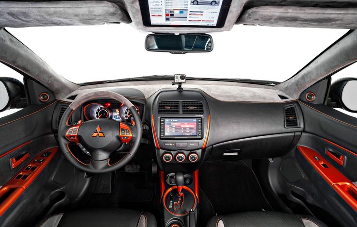
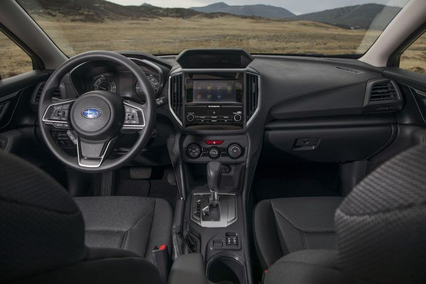
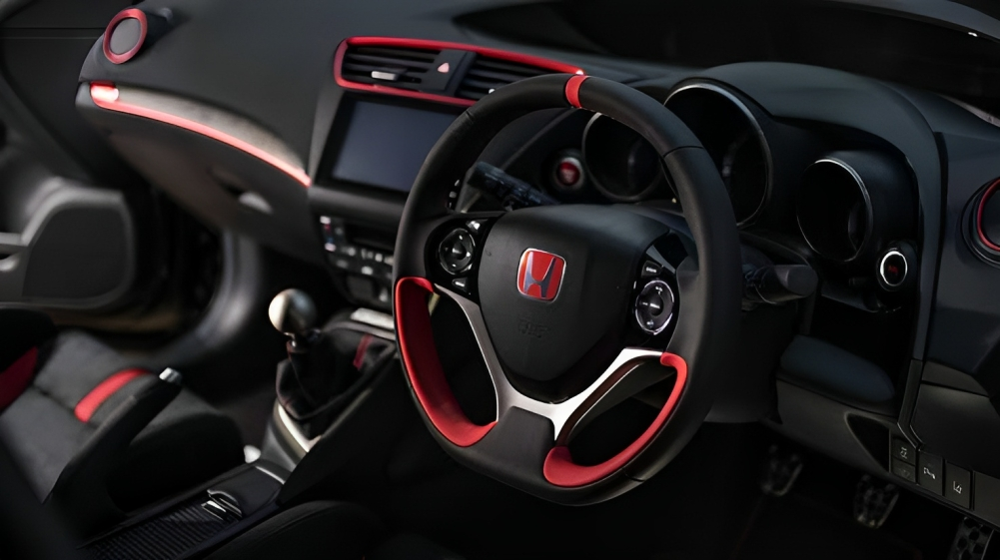
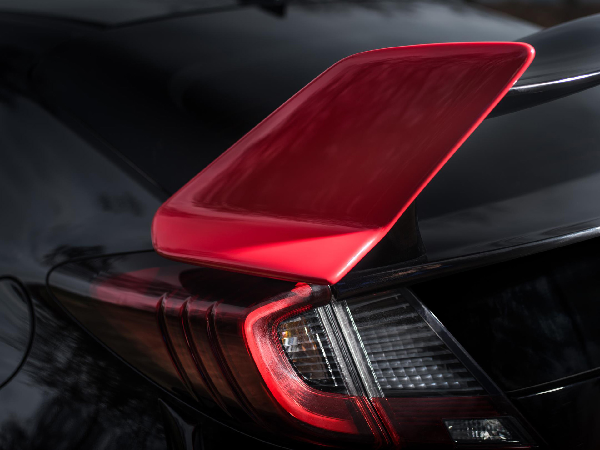
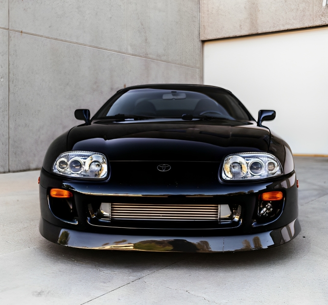
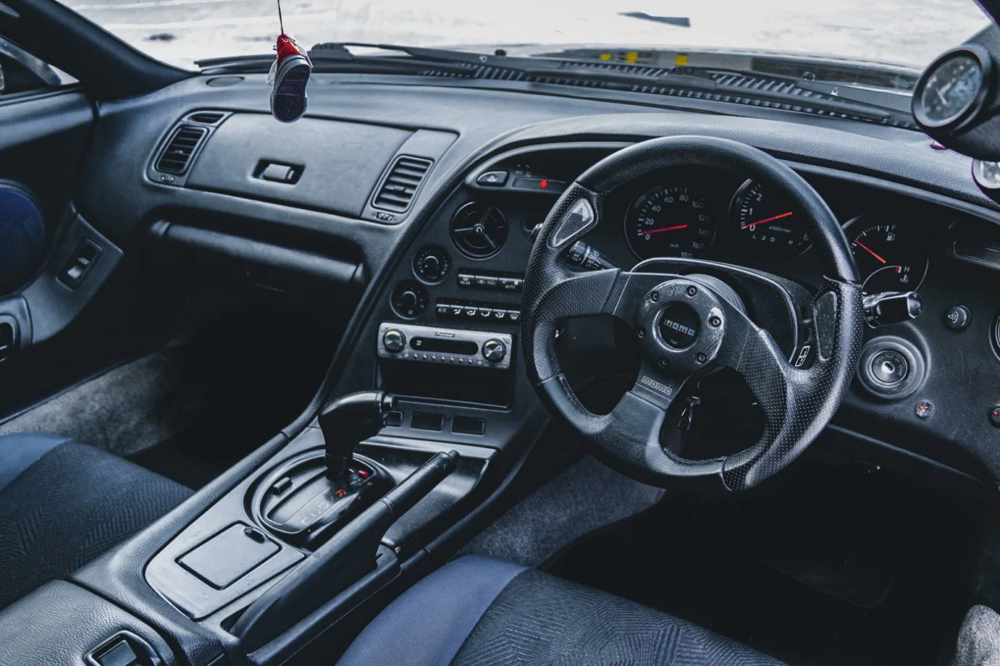
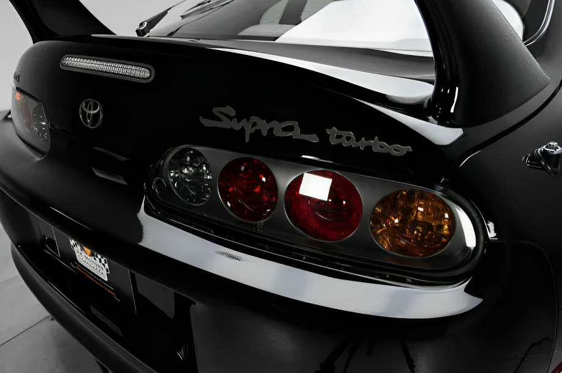
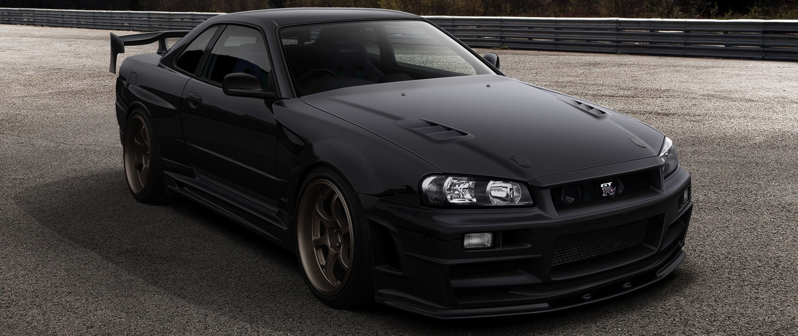
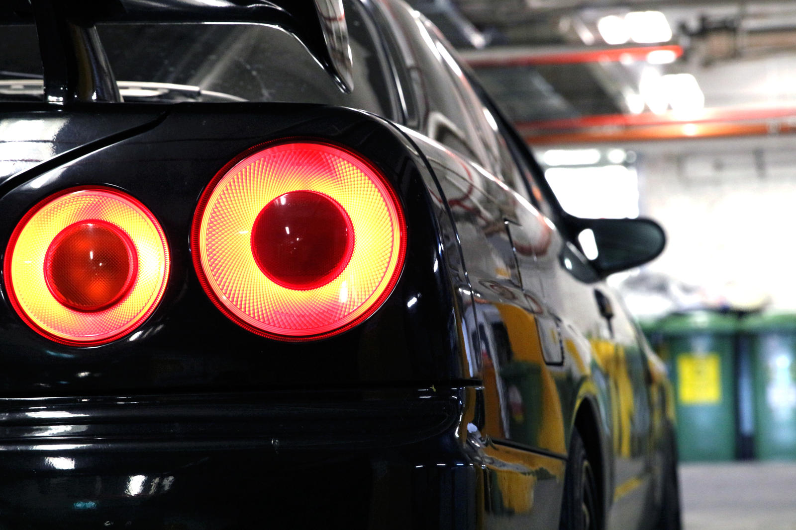
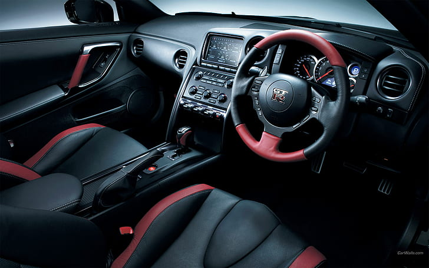

HONDA NSX
573 hp @ 7500rpm
Horsepower
Twin-Turbo Aluminum-Alloy 75-Degree V-6
Engine Type
9-Speed
Manual Transmission
The Honda NSX, marketed in North America as the Acura NSX, is a two-seater, mid-engine coupe sports car manufactured by Honda.
The origins of the NSX trace back to 1984, with the HP-X concept, which was a mid-engine 3.0 L V6 engine rear wheel drive sports car.
MAZDA RX-7
1.3-liter twin-turbo rotor
Engine Type
6-Speed manual
Manual Transmission
The Mazda RX-7 is a front-engine, rear-wheel-drive, rotary engine-powered sports car that was
manufactured and marketed by Mazda from 1978 until 2002 across three generations, all of which made use of a compact, lightweight Wankel rotary engine.
MITSUBISHI LANCER EVOLUTION


276 hp @ 7000rpm
Horsepower
2.6-liter Twin-Turbocharged Inline-Six
Engine Type
6-Speed
Manual Transmission
The Mitsubishi Lancer Evolution, popularly referred to as the 'Evo', is a sports sedan and rally
car based on the Lancer that was manufactured by Japanese manufacturer Mitsubishi Motors from 1992 until 2016.
TOYOTA AE86 TRUENO
124 hp @ 6600rpm
Horsepower
1.6 L 4A-GEU I4 DOHC engine12.
Engine Type
T50 5-speed manual
Manual Transmission
The AE86 series of the Toyota Corolla Levin and Toyota Sprinter Trueno are small, front-engine/rear-wheel-drive
models within the front-engine/front-wheel-drive fifth generation Corolla range—marketed by Toyota from 1983 to 1987 in coupé and liftback configurations.
SUBARU IMPREZA



152 hp @ 6000rpm
Horsepower
2.0-liter four-cylinder
Engine Type
5-Speed
Manual Transmission
The Subaru WRX is an all-wheel drive sport compact car manufactured by the Japanese automaker Subaru,
originally based on the Impreza created for the World Rally Championship in 1992. Subaru claimed the name WRX stands for "World Rally experimental".
MAZDA MIATA
181 hp @ 7000rpm
Horsepower
2.0-liter four-cylinder
Engine Type
6-Speed
Manual Transmission
The Mazda MX-5 is a lightweight two-passenger sports car manufactured and marketed by Mazda with a front mid-engine, rear-wheel-drive layout.
The convertible is marketed as the Mazda Roadster (マツダ・ロードスター, Matsuda Rōdosutā) or Eunos Roadster (ユーノス・ロードスター, Yūnosu Rōdosutā) in Japan,
and as the Mazda Miata (/miˈɑːtə/) in the United States, and formerly in Canada, where it is now marketed as the MX-5 but is still commonly referred to as Miata.
SUBARU WRX
271 hp @ 5600rpm
Horsepower
Turbocharged 2.4-liter flat-four-cylinder
Engine Type
6-Speed
Manual Transmission
The Subaru WRX is an all-wheel drive sport compact car manufactured by the Japanese automaker Subaru, originally
based on the Impreza created for the World Rally Championship in 1992. Subaru claimed the name WRX stands for "World Rally experimental".
HONDA CIVIC TYPE R




315 hp @ 6,500 rpm
Horsepower
In-Line 4-Cylinder with Turbocharger
Engine Type
6-Speed
Manual Transmission
The Honda Civic Type R is a turbocharged sporty car with impressive horsepower and aerodynamic enhancements.
It has distinctive styling elements that make it stand out from other Civic models. It offers a thrilling driving experience on both the road and the track.
TOYOTA SUPRA MK-4




321 hp @ 5,600 rpm
Horsepower
3.0L Sequential Turbo Straight Six
Engine Type
6-Speed
Manual Transmission
The Toyota Supra Mk4 (1993-2002) is a revered sports car, known for its sleek design and powerful 2JZ-GTE engine.
With timeless style and impressive performance, it remains a beloved icon among automotive enthusiasts.
NISSAN SKYLINE GT-R V-SPEC (R34)




276 hp @ 7000rpm
Horsepower
2.6-liter Twin-Turbocharged Inline-Six
Engine Type
6-Speed
Manual Transmission
The Nissan Skyline GT-R R34, built from 1999 to 2002, is an iconic Japanese sports car with a sleek design and
formidable RB26DETT 2.6L twin-turbo engine, symbolizing the pinnacle of Japanese performance cars.